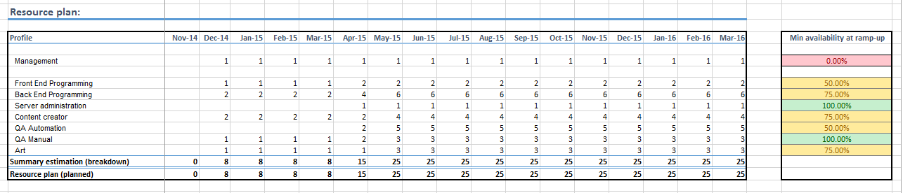

One Page Project Estimates
The questions this post is providing an answer to are:
-
How can a project manager provide visibility to his / her stakeholders when he / she wants to pitch to them a new project?
-
How can he / she highlight the risks associated with staffing and estimations and play with just a few variables so that risk is brought to an acceptable level?
The method (and its associated Excel-based simulated model) is intentionally simple, its goal being to have the outcome fit on a one or two page sheet and keep the number of variables low so that iterations are easy to make. It does not aim to provide an accurate representation for the risk nor to be used when the required precision is high.
I decided to write this post few days ago, when reading this article [Harvard Business Review] I realized that, in many ways, I have been proceeding in roughly a similar manner when providing high level estimates for my projects.
For the document that exemplifies the method I used, I kept the same example, the book store, for simplicity. Please note that:
-
Numbers in the example are totally random
-
This
is a simplified model, designed to draw high level conclusions, and not
a project management tool per-se. The aim is to fit all the information
on a single sheet of paper, mostly communication and quick iteration
purposes. Here is how:
****
Step 1:
-
Fill the "Budgets" column with the main features of the project.
-
In the "timeline" section add your estimation in terms of total headcount that you expect to have working on each specific feature.
-
In the "confidence" level add your "gut-feeling" estimate on how accurate your estimation is. In the simulation, the duration / budget will be considered to take somewhere between:
-
Min: confidence% * estimation
-
Max: estimation / confidence%, thus a a 50% confidence will lead to Min of 50% of the men-months needed and a Max of double the men-months needed, thus prolonging the time needed to finish the work.
Therefore, padding the estimations or taking extra safety precautions are not recommended.
- In the risk level add color coded where the uncertainty is drawn from (technology, backlog (scope), or management-related unknowns like external dependencies).
{kind=link}
****
Step 2:
-
Fill the resource breakdown in the second sheet of the document - this shows how you plan to allocate staff to the project. First start off with the initial breakdown (the one that came from estimating each of the features from the first page)
-
Look at the available resources and see how many people you can 100% commit to allocate according to the resource needs. Then compare to the resource needs and add fill the "Min availability at ramp-up" column.**

{kind=link}
****
Step 3:
Evaluate the results - every time you press CTRL-S, a new simulation is performed.
Look at the basic simulation for resource availability:
The model is very basic. It takes into consideration the resource needs and the initial allocation probability and then randomly adds headcount to try to catch up with the needs. It assumes that, once a resource is allocated it is not deallocated until the end of the project. The basic idea is that staff may not be available in time (due to assignment to other projects or inability to recruit in time)
{kind=link}
Look at the following section of the first table:
- In the green square it shows how much resource buffer you have (or you need to recover from somewhere - if it is a negative number).
{kind=link}
Look at the execution simulation results:
The most important line is the
DEBT MM.
This shows how much you need to recover (negative numbers) or have the capacity to be ahead of the plan (positive numbers) on a monthly basis.
{kind=link}
****
Step 4:
This is the most important step -
iterate and play with the numbers:
-
Check what needs to be done to improve your estimates and what would be an acceptable confidence level in order to start the project.
-
See what can be scheduled earlier in order to use the extra resources that you might have in the beginning and reduce the risk towards the end of the project.
-
Play with the resource plan - after you run the simulation with the initial estimates, add / remove staff to each line to see how that will impact your buffers. Find a resource plan that you and your team feel comfortable with.
****
Step 5:
As time goes by, update the excel file with real data and see how your predictions match the reality. Don't forget that this is just a road-map simulation and a proper Agile process should be followed with the team.
End note:
Please always remember that this is a model, it is designed to help you ask yourself questions. It is simple by design because adding more variables would only make iterations cumbersome and relations between data points harder to grasp. Use the model to express to your stakeholders what you have in mind and identify some optimal resource and estimation targets that need to be met in order to proceed safely ahead.
If you need more depth, play with the formulas and add more data points to the model. If you have any questions, please ping me as well. I'd love to discuss your findings and your ideas on how to pitch and estimate risks more clearly, preferably on a single or maximum two page document. :)